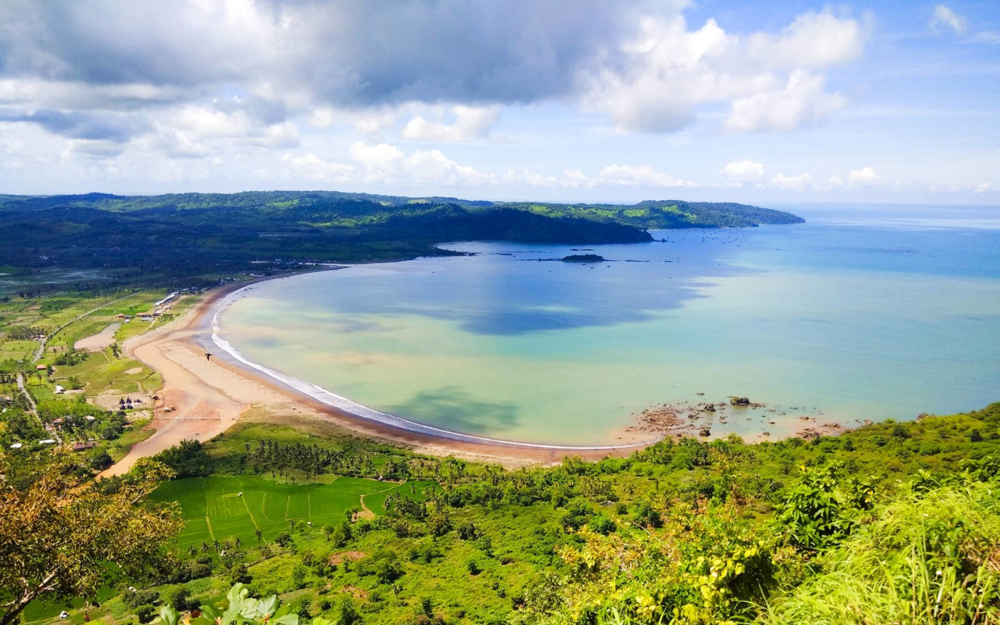
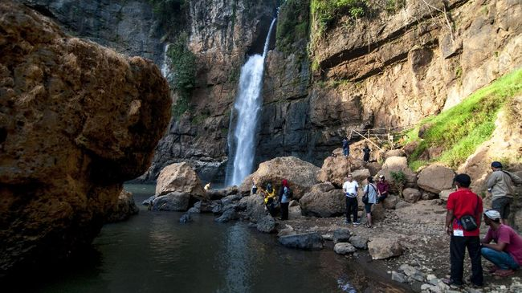

Sukabumi
Kabupaten Sukabumi, adalah sebuah kabupaten di Tatar Pasundan, Provinsi Jawa Barat, Indonesia. Ibukotanya adalah Palabuhanratu. Kabupaten Sukabumi merupakan kabupaten terluas kedua di Pulau Jawa setelah Kabupaten Banyuwangi di Provinsi Jawa Timur. Kabupaten ini berbatasan dengan Kabupaten Bogor di utara, Kabupaten Cianjur di timur, Samudra Hindia di selatan, serta Kabupaten Lebak di barat.
Sejak era kolonial Belanda, Sukabumi merupakan salah satu kota di Jawa Barat yang menjadi tujuan wisata dan peristirahatan terbaik.
Kota perkebunan yang dikelilingi banyak bentang alam mulai dari curug, pantai, bukit hingga hutan ini juga tergolong dekat dari kota besar seperti Jakarta dan Bandung. berikut beberapa objek wisata yang bisa anda kunjungi.
Geopark Ciletuh
Geopark Ciletuh adalah objek wisata alam di Sukabumi yang wajib dikunjungi. Selain panorama pepohonan dan persawahan yang asri, ada banyak sekali air terjun eksotis yang terdapat di kawasan alam ini yang bisa Toppers kunjungi. Beberapa air terjun atau curug yang bisa ditemui di kawasan wisata di Sukabumi ini adalah Curug Cimarinjung, Curug Cikaso, Curug Awang, dan lainnya.
Curug Cimarinjung
Curug ini berada di sebuah kampung bernama Cimarinjung di Desa Ciwaru yang masih masuk dalam kawasan Taman Bumi Ciletuh-Pelabuhan Ratu. Tempatnya cukup tersembunyi dan tidak diketahui banyak orang. Untuk menuju ke tempat ini, kamu bisa berjalan kaki dari tempat pemberhentian terdekat atau menggunakan sepeda motor. Selama perjalanan kamu akan dimanjakan dengan pemandangan sungai dan hutan di sekitarnya. Air terjun yang tingginya mencapai 100 meter ini dikelilingi bentang alam yang indah dan masih alami.
Gunung Gede Pangrango
Yang terakhir tentu saja Gunung Gede Pangrango merupakan sebuah gunung di Pulau Jawa, tepatnya di Provinsi Jawa Barat yang masuk dalam kawasan Taman Nasional Gunung Gede Pangrango (TNGGP). Gunung tersebut merupakan salah satu yang kerap dikunjungi para sobat gunung yang hendak berkemah sambil melepas penat dari hiruk-pikuk perkotaan.